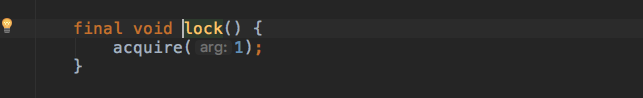
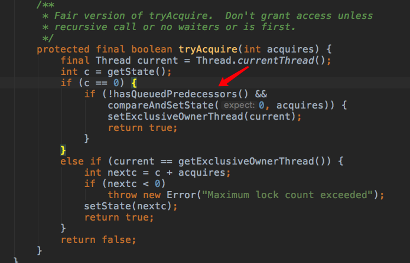
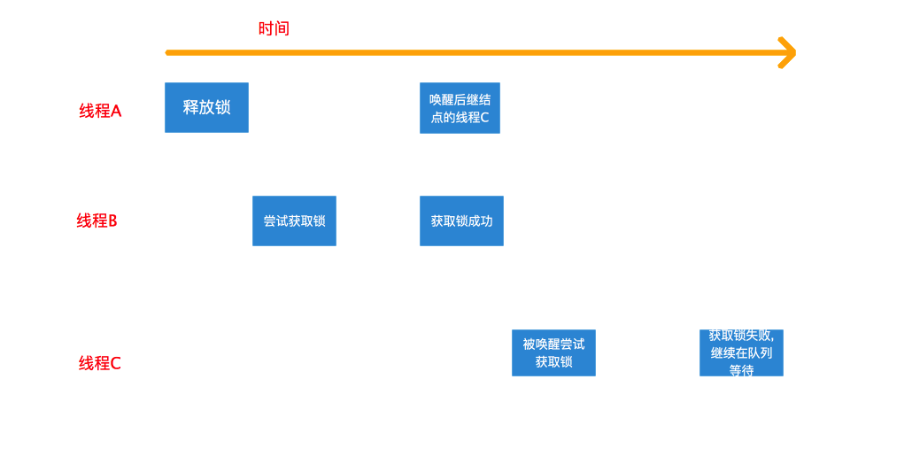
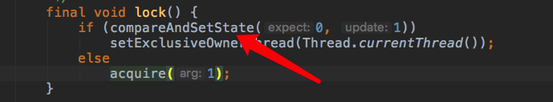
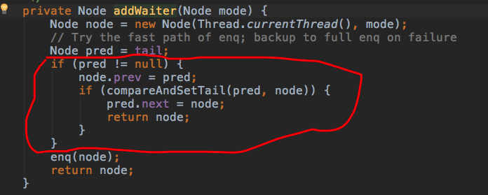

一、公平锁相比非公平锁的不同
公平锁模式下,对锁的获取有严格的条件限制。在同步队列有线程等待的情况下,所有线程在获取锁前必须先加入同步队列。队列中的线程按加入队列的先后次序获得锁。
从公平锁加锁的入口开始

对比非公平锁,少了非重入式获取锁的方法,这是第一个不同点
接着看获取锁的通用方法tryAcquire(),该方法在线程未进入队列,加入队列阻塞前和阻塞后被唤醒时都会执行。

在真正CAS获取锁之前加了判断,内容如下
1 | public final boolean hasQueuedPredecessors() { |
从方法名我们就可知道这是判断队列中是否有优先级更高的等待线程,队列中哪个线程优先级最高？由于头结点是当前获取锁的线程,队列中的第二个结点代表的线程优先级最高。
那么我们只要判断队列中第二个结点是否存在以及这个结点是否代表当前线程就行了。这里分了两种情况进行探讨:
第二个结点已经完全插入,但是这个结点是否就是当前线程所在结点还未知,所以通过s.thread != Thread.currentThread()进行判断,如果为true,说明第二个结点代表其他线程。
第二个结点并未完全插入,我们知道结点入队一共分三步：
- 待插入结点的pre指针指向原尾结点
- CAS更新尾指针
- 原尾结点的next指针指向新插入结点
所以(s = h.next) == null 就是用来判断2刚执行成功但还未执行3这种情况的。这种情况第二个结点必然属于其他线程。以上两种情况都会使该方法返回true,即当前有优先级更高的线程在队列中等待,那么当前线程将不会执行CAS操作去获取锁,保证了线程获取锁的顺序与加入同步队列的顺序一致，很好的保证了公平性,但也增加了获取锁的成本。
二、为什么基于FIFO的同步队列可以实现非公平锁？
由FIFO队列的特性知,先加入同步队列等待的线程会比后加入的线程更靠近队列的头部,那么它将比后者更早的被唤醒,它也就能更早的得到锁。从这个意义上,对于在同步队列中等待的线程而言,它们获得锁的顺序和加入同步队列的顺序一致，这显然是一种公平模式。然而,线程并非只有在加入队列后才有机会获得锁,哪怕同步队列中已有线程在等待,非公平锁的不公平之处就在于此。回看下非公平锁的加锁流程,线程在进入同步队列等待之前有两次抢占锁的机会:
- 第一次是非重入式的获取锁,只有在当前锁未被任何线程占有(包括自身)时才能成功;
- 第二次是在进入同步队列前,包含所有情况的获取锁的方式。
只有这两次获取锁都失败后,线程才会构造结点并加入同步队列等待。而线程释放锁时是先释放锁(修改state值),然后才唤醒后继结点的线程的。试想下这种情况,线程A已经释放锁,但还没来得及唤醒后继线程C,而这时另一个线程B刚好尝试获取锁,此时锁恰好不被任何线程持有,它将成功获取锁而不用加入队列等待。线程C被唤醒尝试获取锁,而此时锁已经被线程B抢占,故而其获取失败并继续在队列中等待。整个过程如下图所示

如果以线程第一次尝试获取锁到最后成功获取锁的次序来看,非公平锁确实很不公平。因为在队列中等待很久的线程相比还未进入队列等待的线程并没有优先权,甚至竞争也处于劣势:在队列中的线程要等待其他线程唤醒,在获取锁之前还要检查前驱结点是否为头结点。在锁竞争激烈的情况下,在队列中等待的线程可能迟迟竞争不到锁。这也就非公平在高并发情况下会出现的饥饿问题。那我们再开发中为什么大多使用会导致饥饿的非公平锁？很简单,因为它性能好啊。
自我理解：
不一定只有如队列才有机会获取锁，每个线程在入队列之前都会有两次机会获取锁。
如果在入队列之前就获取锁，则以后都不需要入队列，工作完直接释放即可；如果在入队列之前两次机会都没有获取到锁，那么只能入队列，排队等待前驱节点成为 head，并工作结束时释放锁，然后唤醒它。 —— 入队列是非公平的，一旦入了队列，就得公平排队了。
三、为什么非公平锁性能好
非公平锁对锁的竞争是抢占式的(队列中线程除外),线程在进入等待队列前可以进行两次尝试,这大大增加了获取锁的机会。这种好处体现在两个方面。
3.1 节省了线程阻塞唤醒的开销
线程不必加入等待队列就可以获得锁,不仅免去了构造结点并加入队列的繁琐操作,同时也节省了线程阻塞唤醒的开销（LockSupport）,线程阻塞和唤醒涉及到线程上下文的切换和操作系统的系统调用,是非常耗时的。在高并发情况下,如果线程持有锁的时间非常短,短到线程入队阻塞的过程超过线程持有并释放锁的时间开销,那么这种抢占式特性对并发性能的提升会更加明显。
3.2 减少CAS竞争
如果线程必须要加入阻塞队列才能获取锁,那入队时CAS竞争将变得异常激烈,CAS操作虽然不会导致失败线程挂起,但不断失败重试导致的对CPU的浪费也不能忽视。除此之外,加锁流程中至少有两处通过将某些特殊情况提前来减少CAS操作的竞争,增加并发情况下的性能。
- 一处就是获取锁时将非重入的情况提前,如下图所示

- 另一处就是入队的操作,将同步队列非空的情况提前处理

这两部分的代码在之后的通用逻辑处理中都有,很显然属于重复代码,但因为避免了执行无意义的流程代码,比如for循环,获取同步状态等,高并发场景下也能减少CAS竞争失败的可能。
如果有什么地方描述的错误或者缺失，请在下方留言，大家一起交流，一起学习，一起成长~
下一节：ReentrantLock （五） —— 非公平锁总结